World editor scripting basics
Lets find out about world editor scripting.
Lets find out about world editor scripting.
Let's start with simple scene.
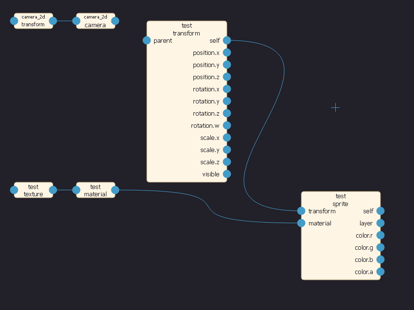Add button, scriptLua and string to scene.
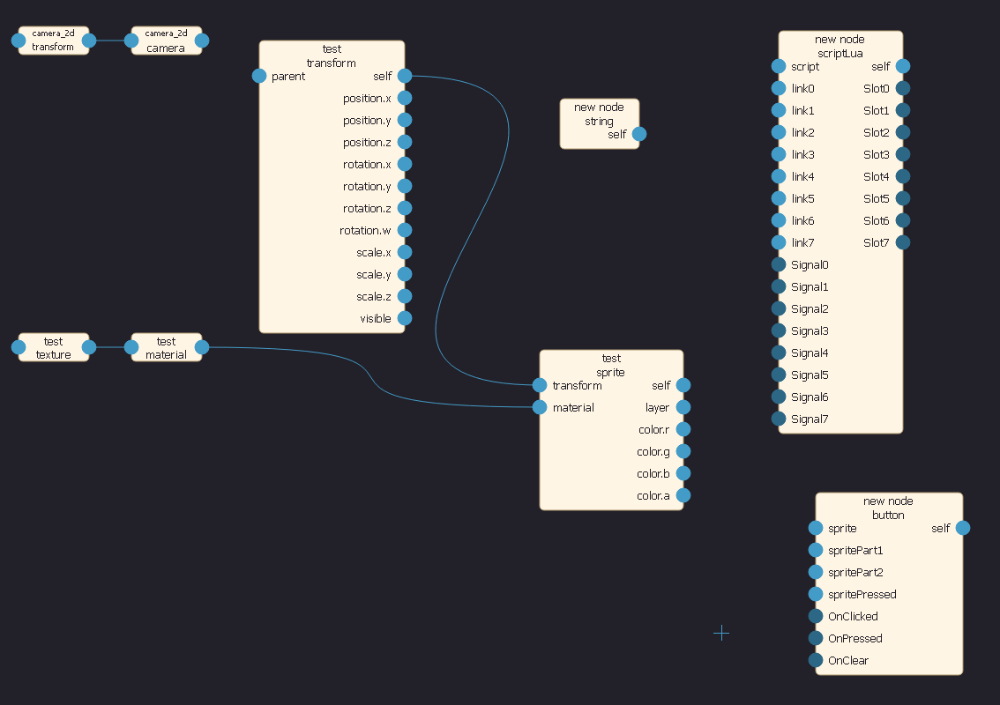Select new nodes and rename them to 'script' and 'button' with help of Tools -> Rename selected (F8).
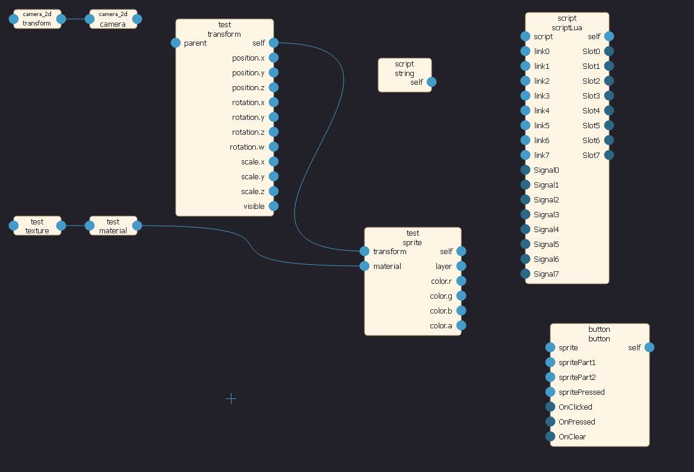Idea is similar to Kismet (Unreal Engine visual scripting system). But we have flow from left to right, when Kismet is from right to left. And no arrows :(
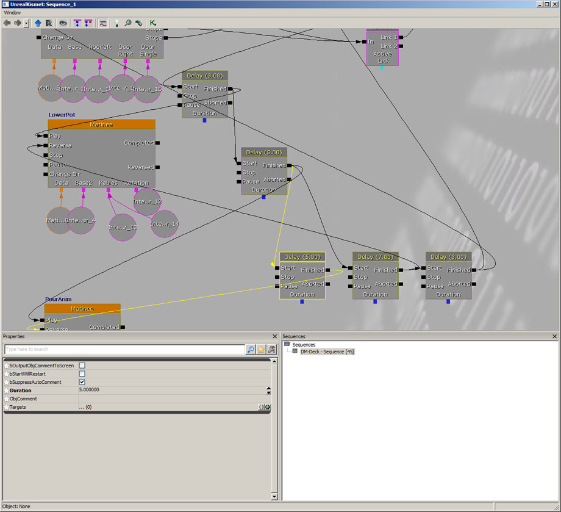So there are darker dots. Signal dots (A) generate event, Slot dots (B) accept events, one signal dot can be connected to multiply slot dots.
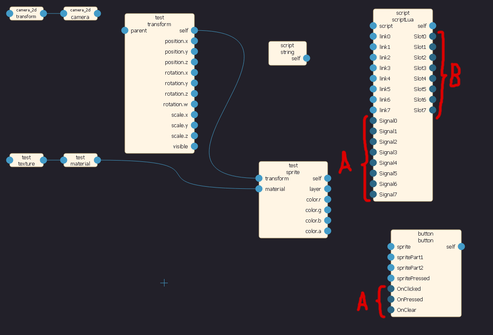Let's just connect everything like this. Press on signal dot and move mouse to slot dot. When button push 'OnClicked' event, script recieve it on general slot 0.
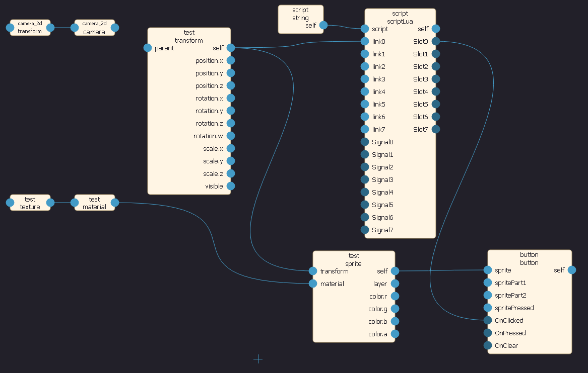Make sure that material shader is set to 'sprite'.
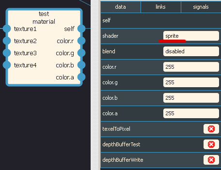If you run project now sprite should be pressable (Remember : save, save for bakery, bake and run, quite stupid yep - we think about it).
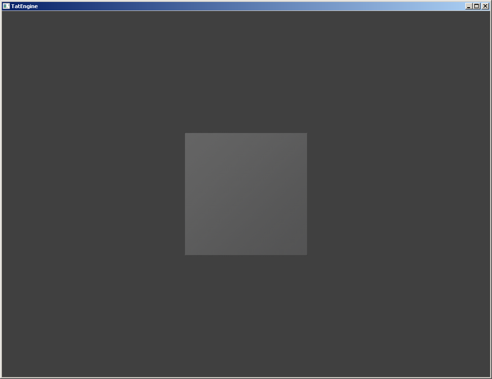Select string node, and press Tools -> Curve/String/Component editor (Ctrl + E). You should see this.
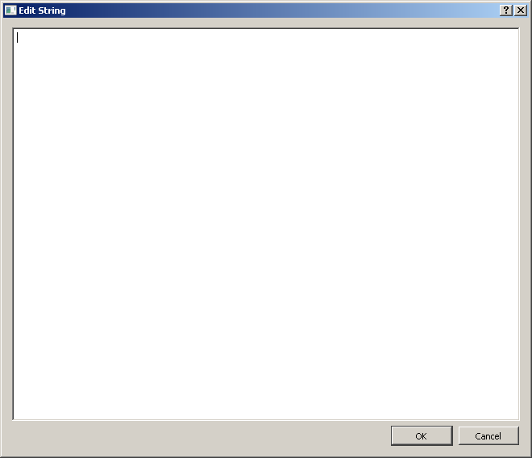Lets start with template for script.
-- will be global variable, shared between all scripts
enableTest = 0;
-- will be local variable
local t = 0;
-- constructor, will be called when script inited
function metaname.init()
end
-- destructor, will be called when script removed
function metaname.deinit()
end
-- update function, will be called each frame
function metaname.onUpdate()
-- simple moving
t = t + 1;
local a = t * math.pi / 180;
metaname.link0.pos_x = math.cos(a) * 128;
metaname.link0.pos_y = math.sin(a) * 128;
end
-- will be called when slot0 recieve event
function metaname.slot0()
print('test');
metaname.link0.scl_x = math.random() + 1;
end
-- slots have from 0 to 4 agruments
function metaname.slot1(a, b, c, d)
-- that how you should call a signal
signal0(metaname.actor, d, c, b, a);
endSo now sprite will be moving in circle. And you can press on it and size will change.
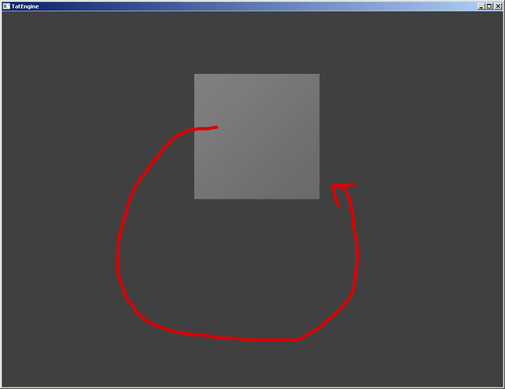Lua script is not the only one actor node. Lets find out about curve node. Create it, rename it and connect everything like this.
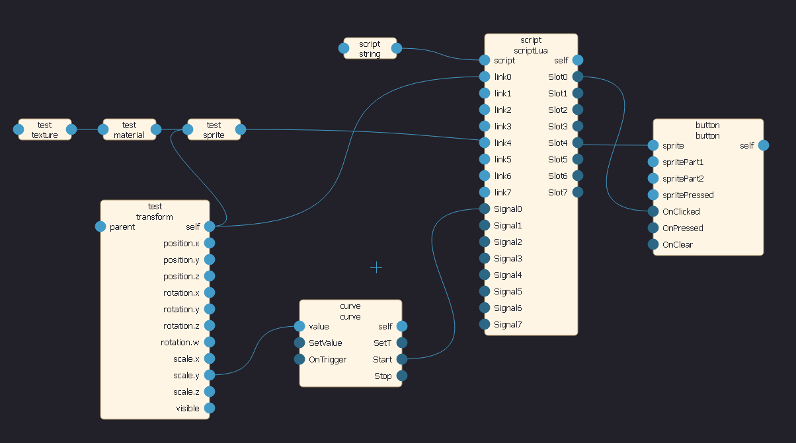Select curve node and press Tools -> Curve/String/Component editor (Ctrl + E). Make some animation.
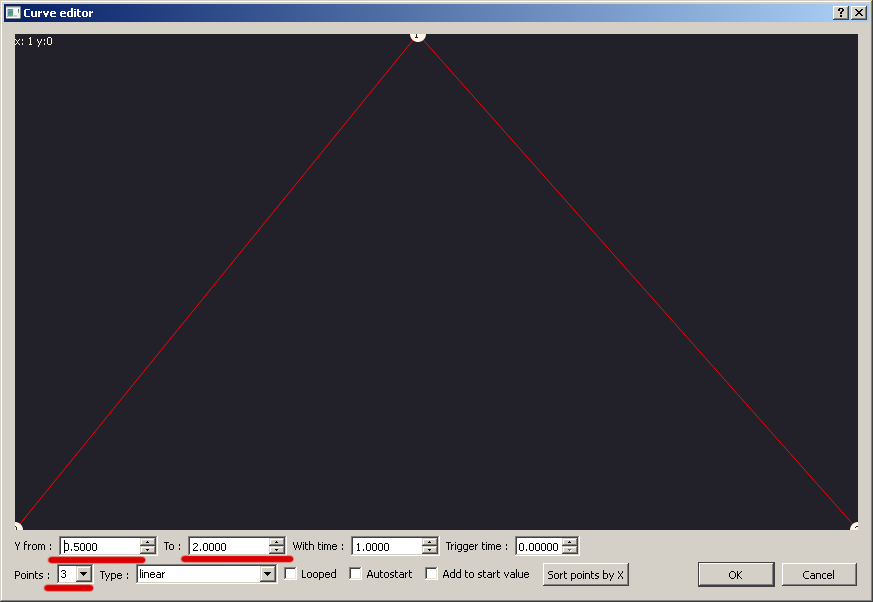Add signal0 call to button event handler.
-- will be global variable, shared between all scripts
enableTest = 0;
-- will be local variable
local t = 0;
-- constructor, will be called when script inited
function metaname.init()
end
-- destructor, will be called when script removed
function metaname.deinit()
end
-- update function, will be called each frame
function metaname.onUpdate()
-- simple moving
t = t + 1;
local a = t * math.pi / 180;
metaname.link0.pos_x = math.cos(a) * 128;
metaname.link0.pos_y = math.sin(a) * 128;
end
-- will be called when slot0 recieve event
function metaname.slot0()
print('test');
metaname.link0.scl_x = math.random() + 1;
-- start some animation
signal0(metaname.actor);
end
-- slots have from 0 to 4 agruments
function metaname.slot1(a, b, c, d)
-- that how you should call a signal
signal0(metaname.actor, d, c, b, a);
endAnd now you should see scaleY animation on button click.
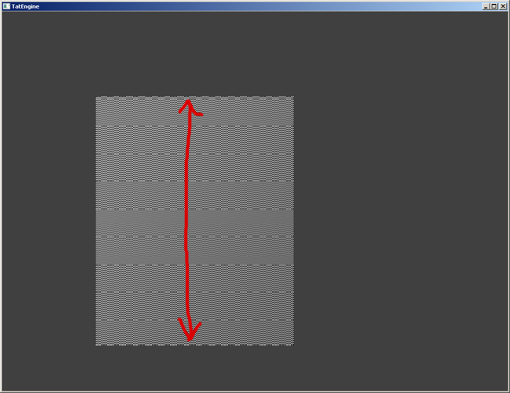